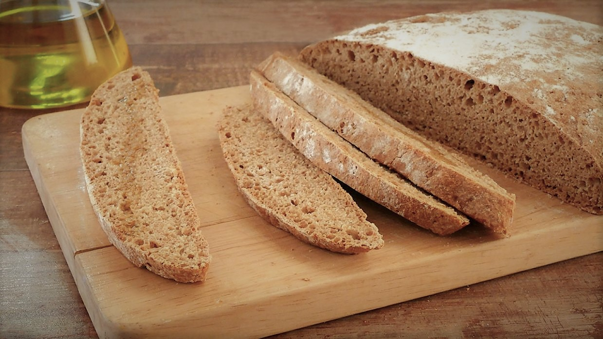
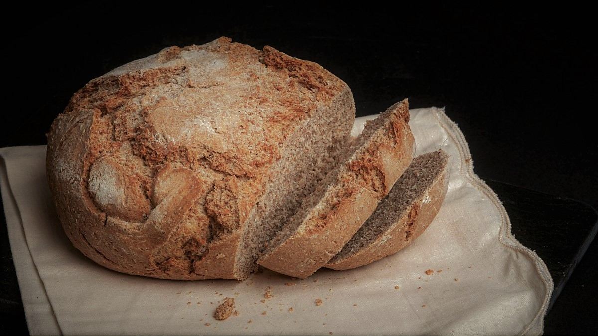
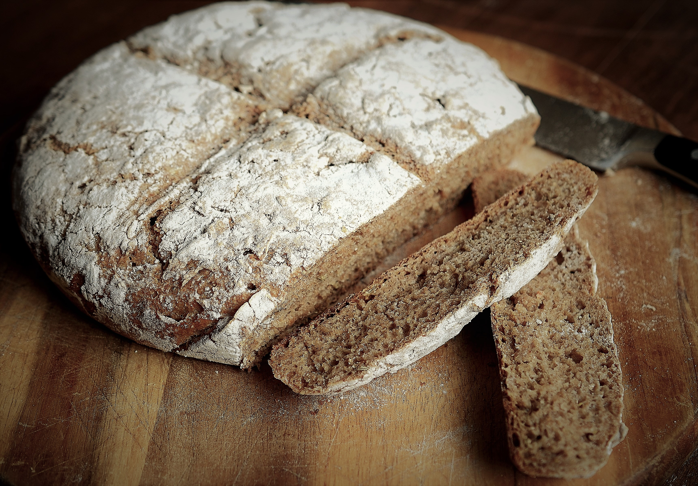
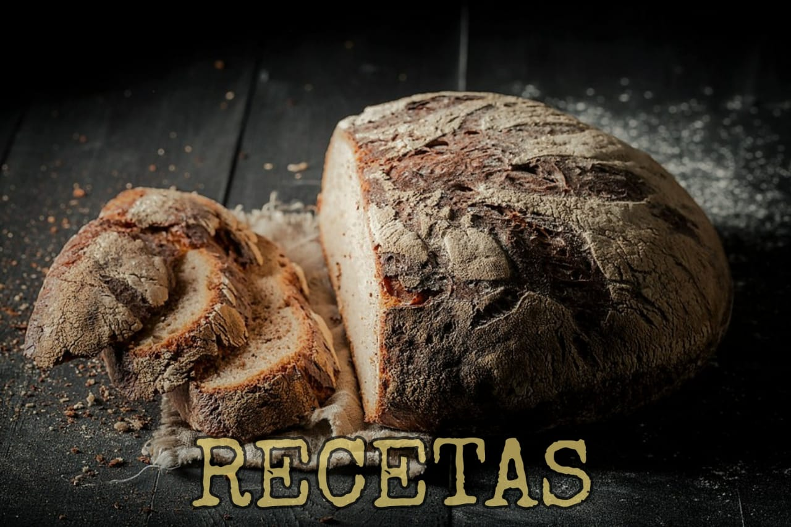
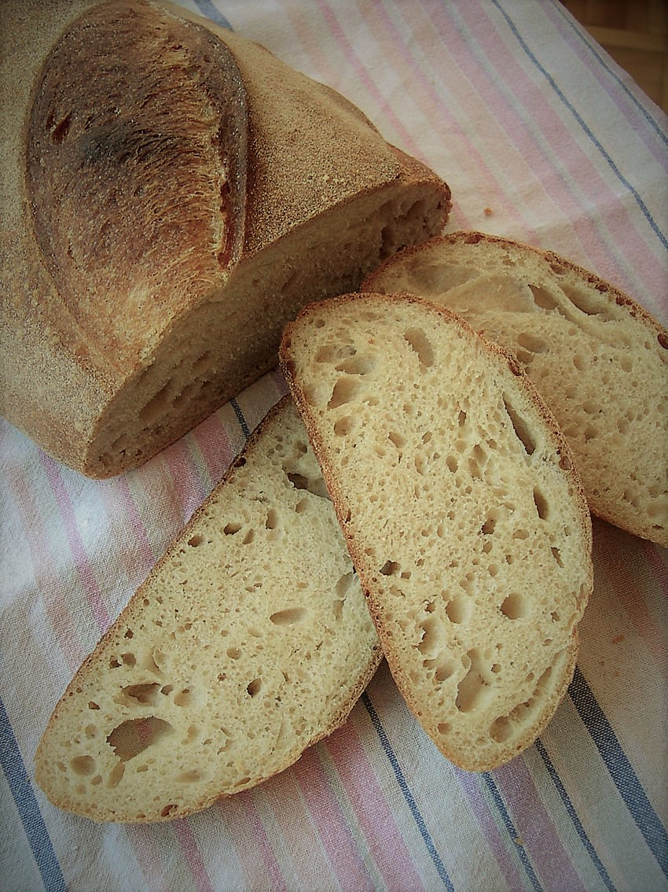
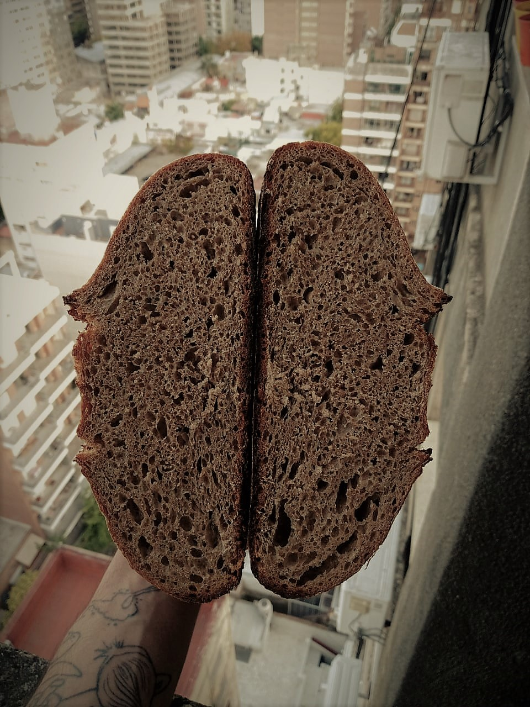
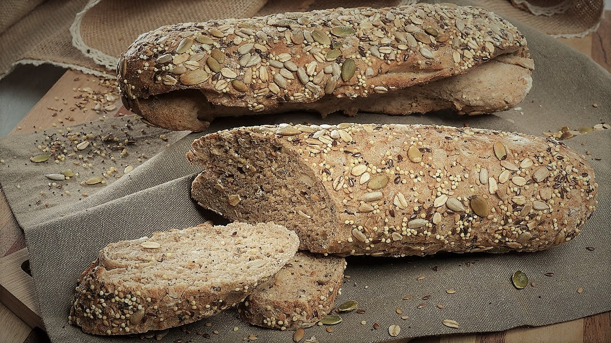
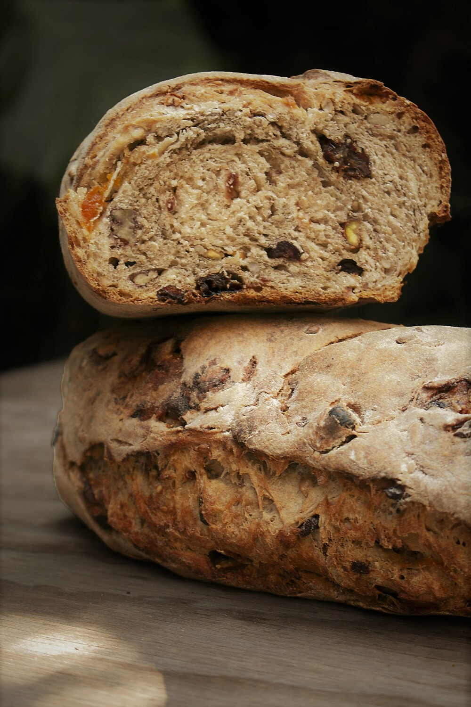
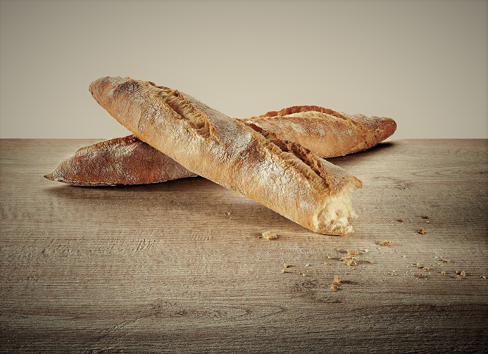
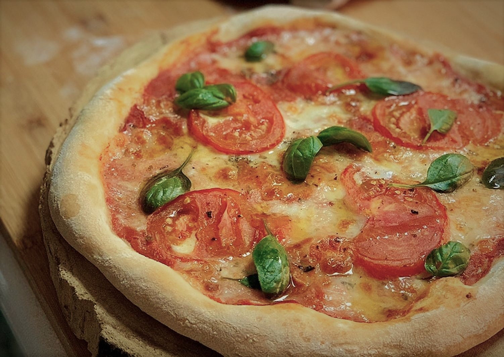

<h1 class="LetraBlanca" class="textoanimado" class="display-1" class="CajaTitulo"> <i>Historia</i> </h1>
Historia
Harina, agua y sol. ¿Hace falta algo más para remontarnos a los orígenes de la panadería? No. Ese es el origen de la masa madre y el principio que le da vida y movimiento.
Partimos de esos primeros granos de cereales apenas molidos y aglutinados para luego cocer entre piedras calientes. más tarde refinalos y por último convertirlos en harinas y pan ácimo.
Quizás, gracias al descuido egipcio, el olvido obró en esos componentes (harina y agua) y el dios Ra intervino. ¡Y ya que estamos llamamos a Chronos!
La historia comenzó a escribirse de otra manera, mucho más aromática y apetitosa.
De esa galleta plana crecieron unos alvéolos interesantes que no fueron desechados, sino más bien valorados. Y de esa hinchazón nació nuestro pan. ¡Ahí hubo magia!
Quienes buceamos en la historia de la panadería sabemos que, si bien los panes de masa madre poseen cualidades superlativas, el tiempo de preparación y dedicacón son factores para tener en cuenta.
Cuando surgió entre los profecionales la disponibilidad de levaduras que trabajan más rápidamente, produciendo una fermentación en pocas horas, se abrió un paréntesis que duró siglos y permitió desarollar ese abanico de posibilidades que nos ofrece la panadería actual.
PAN CON ESPELTA

La espelta (Triticum spelta) es un trigo antiguo, menos conocido que su primo moderno (Triticum aestivum), que fue ampliamente cultivado hace unos siete mil años. Luego, con el avance de las maquinarias, cayó en desuso. Como posee una cáscara más dura, su proceso es mucho más complejo. Por suerte, no llegó a perderse del todo y hace unos treinta años se recuperaron algunos granos y volvió a sembrarse en Europa, expandiéndose luego a otros continentes.
Al ser un trigo antiguo, está genéticamente menos modificado que los actuales y posee excelentes propiedades. Es producto de la agricultura ecológica y sustentable. Contiene altos niveles de proteínas, fibras, minerales y vitaminas fundamentales.
PAN CON KAMUT

kamut (Triticum turgidum) también es un trigo antiguo, originario de Egipto y pariente de los trigos duros modernos. Originalmente fue descubierto por un bioquímico y agrícola estadounidense y luego estandarizado mundialmente por la firma Kamut Internacional, que lo ha popularizado como un cereal ecológico y orgánico.
ΕΙ grano es de bastante mayor tamaño que el de trigo común, de sabor más dulce y más fácil de digerir, por lo que es muy atractivo
para ser incluido en dietas saludables.
PAN 100% CENTENO

El centeno (Secale cereale) es originario de Eurasia y el consumo humano de este cereal es más reciente que el de los anteriores, remontándose al Paleolítico tardío. Posee menor contenido de gluten que el trigo, razón por la cual los panes hechos a base de este grano tienden a tener una miga más apelmazada y más oscura; sin embargo, aporta un sabor y aroma muy típico.
PAN CON TRIGO SARRACENO

A pesar de su nombre, el trigo sarraceno (Fagopyrum esculentum) no es un trigo ni es un cereal. Es la semilla que se extrae de una planta de la familia del ruibarbo. De origen asiático, se introdujo en Europa luego de las cruzadas.
La harina de trigo sarraceno o alforfón no tiene gluten, por lo que habrá que usarla en menor medida en las recetas para pan. Lo que aporta es mucho sabor, un perfume muy especial y el color grisáceo intenso característico de esta harina
PAN CON SEMOLA

La sémola es la harina de trigo duro (Triticum durum), de color amarillenta, también
conocida como sémola rimacinata – que quiere decir vuelta a moler, ya que su primera molienda es muy gruesa-. Se trata de una harina clásica italiana, muy utilizada para pastas y panes. Es alta en proteínas, lo que ayudará con la absorción de agua, y muy rica en vitamina K. A diferencia de otros trigos, éste es uno domesticado a partir del Emmer (Triticum dicoccon), proveniente de Asia.
PAN 100% INTEGRAL CON CENTENO

Con este pan aprenderemos a disfrutar de un rico pan integral, con todo lo bueno que
aportan estos cereales y dejando atrás ese viejo concepto de que lo integral es feo y aburrido.
Combina tres cereales: trigo integral, espelta o kamut y un toque de centeno.
La hidratación es alta (90%), ya que, al tratarse de harinas integrales, hay una importante absorción de agua. El pan queda bien liviano y con una miga aireada, ideal para acompañar una tabla de quesos y fiambres.
PAN CON SEMILLAS

Agregar semillas hará que un pan normal se transforme en un súper pan. ΕΙ aporte de semillas en nuestra dieta tiene muchos beneficios, además del sabor y la textura que añaden. La mezcla que utilizaremos será de semillas de lino, girasol y sésamo, aunque hay una enorme variedad para elegir.
La cantidad es de un 20% del peso de la harina y se las debe incorporar luego de amasar, justo antes de comenzar la fermentación en bloque. La fórmula que presentamos es a modo de ejemplo, ya que se puede aplicar a cualquier pan.
PAN CON NUECES Y PASAS

Este pan tiene la mezcla justa de harinas que, con el añadido de nueces y pasas, será una fiesta de sabores y aromas para nuestros sentidos. La base estará compuesta de trigo integral, de espelta y algo de centeno, y luego incorporaremos las frutas, que no serán más de un 20% del de la harina. Al igual que con el pan de semillas, se deben agregar luego del amasado, justo antes de comenzar con la fermentación en bloque.
BARRA RÚSTICA

Pariente cercano de la baguette, es un pan en forma de barra alargada y su terminación no es tan prolija como la de su par francés. Con una base de harina 000 y algún otro cereal, su principal característica es la corteza, bien crocante y dorada, y su poca miga bien alveolada. La receta que elegimos lleva también espelta o en su defecto trigo integral.
PIZZA

Si hablamos de pan, tenemos que hablar de pizza. ¿A quién no le gusta una rica pizza a la leña, fermentada lentamente en frío por días y con ingredientes tan simples y nobles como los cereales con que hacemos la masa?
La pizza es súper liviana, aromática y obviamente rica, con un cornicello (el borde) aireado y crocante, producto de una cocción rápida y a alta temperatura. Al morder la primera porción sentiremos todos los sabores. Primero la masa, crocante; luego la salsa de tomate, muy natural y fresca, y por último la mozzarella fior di latte suavemente condimentada por un rico aceite de oliva. Nada más. Muy simple, tanto como el pan.
La característica de esta pizza es que se hornea en crudo, con todos sus ingredientes ya colocados sobre la masa.